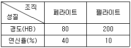
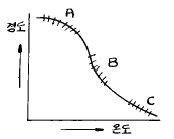

침투비파괴검사기사(구) (2004-03-07 기출문제)
1과목: 침투탐상시험원리
1. 다음 중 기계나 구조물의 설계시 치수, 형상, 재료의 적합성을 판단하거나 혹은 제작된 기계나 구조물이 사용 중 변형, 파손되지 않도록 감시하는데 이용되는 검사법은?
- 누설검사
- 전위차시험법
- 스트레인 측정
- 전자초음파공명법
(정답률: 알수없음)

2. 유화제를 사용한 침투탐상시험시 가장 적절한 유화시간은 어떻게 결정하는가?
- 다른 요소와는 관계없이 5분 이내로 한다.
- 제조회사의 팜플렛에 따른다.
- 실험을 해본 후 결정한다.
- 시험품의 표면온도에 따라 결정한다.
(정답률: 알수없음)
3. 침투탐상검사에서 결함 검출의 신뢰성을 위해 다음 중 고려해야 할 사항이 아닌 것은?
- 비파괴검사원의 자격인정 요건
- 탐상작업에서의 절차 준수
- 검사절차의 인정 시험
- 시험체의 열처리 상태
(정답률: 알수없음)
4. 침투탐상검사 시험편의 사용 목적은?
- 검사체의 온도를 비교, 점검하기 위해 사용한다.
- 침투제의 성능을 비교, 점검하기 위해 사용한다.
- 관련지시와 비관련지시를 비교, 점검하기 위해 사용한다.
- 표면조건을 비교, 점검하기 위해 사용한다.
(정답률: 알수없음)
5. 유리제품의 손상 여부 확인에 적합한 비파괴검사는?
- 방사선투과시험
- 초음파탐상시험
- 자분탐상시험
- 침투탐상시험
(정답률: 알수없음)
6. 침투탐상시험의 수세법과 비교할 때 후유화제법의 장점은 무엇인가?
- 과잉침투제의 제거는 물의 분사로 완료될 수 있다.
- 감도조절이 용이하다.
- 전체적인 탐상검사 시간이 줄어든다.
- 미세한 균열에 대한 감도비가 향상된다.
(정답률: 알수없음)
7. 부적절한 세척에 의해 의사지시가 나타나 재 탐상한 결과 의사지시가 나타나지 않았다. 이 경우에 대한 해석으로 가장 적절한 것은?
- 작은 결함이었을 것이다.
- 외부 오염에 의한 지시였을 것이다.
- 그 부위가 과잉 세척되었다.
- 재탐상으로 인해 불연속의 개구부를 막았을 것이다.
(정답률: 알수없음)
8. 침투탐상시험시 오염은 탐상결과에 많은 영향을 주므로 주기적인 관리가 필요하다. 다음 오염 중 탐상결과에 비교적 적은 영향을 주는 것은?
- 침투제
- 유성유화제
- 수성유화제
- 현상제
(정답률: 알수없음)
9. 침투탐상시험에서 침투율을 조절할 수 있는 물리적 특성으로 다른 특성보다 침투력에 가장 큰 영향을 미치는 것들의 조합은?
- 침투제의 표면장력과 점성
- 침투제의 점성과 휘발성
- 침투제의 휘발성과 인화성
- 침투제의 적심성과 휘발성
(정답률: 알수없음)
10. 침투탐상검사에 사용되는 침투제의 성질로 알맞는 것은?
- 침투제는 물에 용해되지 않는 성질이 있다.
- 침투제는 휘발성이 높으면 높을수록 좋다.
- 침투제는 얇은 도포막을 형성한다.
- 침투제는 결함속에 침투하는 성질과 강산성을 가지고 있어야 한다.
(정답률: 알수없음)
11. 다음 중 전원이 없는 곳에서 이용할 수 있는 비파괴검사법은?
- X선을 이용한 방사선투과검사, 수세성 형광침투탐상검사
- γ선을 이용한 방사선투과검사, 용제제거성 염색침투탐상검사
- 코일법을 이용한 자분탐상검사, 관통법을 이용한 와전류탐상검사
- 수침법을 이용한 초음파탐상검사, 전기저항을 이용한 응력측정
(정답률: 알수없음)
12. 침투탐상시험시 세라믹의 기공에 의한 불연속 지시는 어떻게 나타나겠는가? (단, 다른 검사 조건은 모두 동일)
- 금속의 기공에 의한 지시보다 더욱 선명하게
- 재료에 크게 관계없이 근본적으로 거의 동일하게
- 금속의 기공에 의한 지시보다 덜 선명하게
- 균열의 지시모양처럼 선형으로
(정답률: 알수없음)
13. 다음 침투탐상시험의 대상이 되는 결함 중 침투시간을 가장 길게 해야 하는 결함은?
- 플라스틱 재질의 결함
- 알루미늄 재질의 주조결함
- 구리 재질의 단조결함
- 용접 결함
(정답률: 알수없음)
14. 침투탐상검사를 하기 위한 일반적인 전처리 방법이 아닌것은?
- 증기 탈지법
- 브라스팅법
- 산세척법
- 초음파 세척법
(정답률: 알수없음)
15. 다음 중 침투탐상검사의 신뢰성을 높일 수 있는 방법이 아닌 것은?
- 공인자격 보유자에 의한 시험을 수행하고 주기적으로 재교육한다.
- 침투탐상시험 공정을 자동화하여 시험결과의 재현성을 높여준다.
- 주기적으로 사용중인 침투 탐상제를 표준 탐상제와 비교 점검한다.
- 대비시험편을 사용하여 탐상제 성능과 조작방법의 적합성을 조사한다.
(정답률: 알수없음)
16. 후유화성 침투탐상시험에서 검사 무효를 야기시킬 수 있는 제일 중요한 인자는 다음 중 어느 것인가?
- 과잉 침투시간
- 과잉 현상시간
- 과잉 유화시간
- 과잉 전처리시간
(정답률: 알수없음)
17. 적심성은 다음 중 어느 것에 의해 측정되는가?
- 비중
- 밀도
- 접촉각
- 표면장력
(정답률: 알수없음)
18. 균열 검출에 사용되는 두 종류의 침투제에서 그들의 감도를 비교하는 방법으로 올바른 것은?
- 비중을 측정하기 위해 비중계를 사용한다.
- 균열이 존재하는 알루미늄 시편을 사용한다.
- 접촉각을 측정한다.
- 표면 장력을 측정한다.
(정답률: 알수없음)
19. 록크웰 C-40 이상의 경도를 가지는 재료의 침투탐상검사를 위한 표면처리에 위배되지 않는 방법은?
- 샌드 블라스팅
- 에머리 페이퍼
- 그리트 블라스팅
- 와이어 브러싱
(정답률: 알수없음)
20. 침투탐상검사 공정 중 대형구조물 부분검사에 가장 적합한 시험 절차는?
- 전처리 - 침투 - 유화 - 세척 - 현상 - 건조 - 관찰
- 전처리 - 침투 - 세척 - 현상 - 관찰
- 전처리 - 침투 - 세척 - 건조 - 현상 - 관찰
- 전처리 - 침투 - 세척 - 건조 - 관찰
(정답률: 알수없음)
2과목: 침투탐상검사
21. 모세관현상은 침투제의 침투력과 관련하여 매우 중요한 요인이 되는데 모세관내에서 액체가 상승한 높이에 관한 설명 중 옳은 것은?
- 액체의 표면장력과 접촉각의 코사인(cosine)값에 비례하여 나타난다.
- 액체의 표면장력과 밀도에 비례하여 나타난다.
- 관의 직경과 접촉각의 코사인(cosine)값에 반비례하여 나타난다.
- 액체의 밀도와 접촉각의 코사인(cosine)값에 반비례하여 나타난다.
(정답률: 알수없음)
22. 침투제의 성능을 조사하기 위한 일반적인 방법은?
- 침투액의 점도 조사
- 침투액의 적심성 조사
- 침투액의 휘발성 조사
- 인공결함시험편의 두 부분을 비교 조사
(정답률: 알수없음)
23. 용제제거성 형광 침투제로 침투탐상시험을 시행할 때 솔벤트 세척제의 역할은?
- 결함에서 침투제를 제거한다.
- 침투제의 유화속도를 증가시킨다.
- 시험품 표면의 과잉 침투제를 제거한다.
- 시험품 표면의 침투제를 수세성으로 한다.
(정답률: 알수없음)
24. 현상법 중 결함부에만 부착되고 그 외의 부분에는 부착되지 않는 현상제를 이용하는 현상방법은?
- 습식 현상법
- 속건식 현상법
- 무현상법
- 건식 현상법
(정답률: 알수없음)
25. 침투탐상시험의 현상제 성능검사에 대한 설명 중 틀린 것은?
- 건식 현상제는 육안으로 관찰한다.
- 습식 현상제는 비중계로 농도에 대해서 측정한다.
- 건식 현상제는 감도시험을 실시해야 한다.
- 습식 현상제는 그 제조회사의 권고치와 같으면 사용해도 좋다.
(정답률: 알수없음)
26. 스테인리스 강과 알루미늄의 표면에 동일한 침투제가 적용됐을 때 다음의 설명 중 맞는 것은? (단, 탐상표면의 물리적 특성은 동일한 것으로 간주함)
- 알루미늄과 침투제의 접촉각은 스테인리스강과 침투제의 접촉각과 같다.
- 알루미늄과 침투제의 접촉각이 스테인리스강과 침투제의 접촉각보다 크다.
- 알루미늄과 침투제의 접촉각이 스테인리스강과 침투제의 접촉각보다 작다.
- 접촉각은 재질의 종류에는 영향을 받지 않는다.
(정답률: 알수없음)
27. 후유화성 침투탐상시험에서 침투처리후 건식 현상제를 사용하는 경우 이용되는 현상은?
- X-선 감광
- 취화은(AgBr)의 석출
- 삼투현상(渗透現像)
- 모세관현상(毛細管現像)
(정답률: 알수없음)
28. 침투탐상 시험결과 주로 용접덧붙임 가장자리에 발생하고 날카롭게 주로 선형지시로 나타나는 불연속은?
- 용접비드 균열
- 크레이터 균열
- 피로 균열
- 열영향부 균열
(정답률: 알수없음)
29. 다음 중 기름때가 묻은 시험품의 전처리에 필요한 것은?
- 침투액 조(槽)
- 현상제 분사총(spray gun)
- 블랙라이트(black light)
- 트리클렌(trichlene)
(정답률: 알수없음)
30. 단강품에 발생되는 결함으로 Ni, Cr, Mo 등을 포함한 특수강의 파단면에 미세균열이 발견되며, 그 파면이 은백색을 갖는 결함은?
- 백점
- 고온균열
- 편석
- 라미네이션
(정답률: 알수없음)
31. 주조결함중에서 수축균열이 가장 많이 발생하는 곳은 주로 어디인가?
- 두께변화가 심한 곳
- 두꺼운 쪽
- 얇은쪽
- 용융물이 들어가는 쪽
(정답률: 알수없음)
32. 고온의 열에 방치되었던 세라믹 제품에 나타난 지시로서, 망상모양(그물모양)의 서로 교차한 선으로 나타나는 지시는 무엇인가?
- 열충격
- 피로균열
- 수축균열
- 연삭균열
(정답률: 알수없음)
33. 현상제를 적용시 일반적인 방법중 가장 효과적인 것은?
- 담그는 것
- 걸레질
- 솔질
- 분무
(정답률: 알수없음)
34. 자외선등은 충분히 가열되기까지는 필요한 기능을 발휘하지 못한다. 필요한 방전온도에 이르기까지 최소한 몇 분의 가열시간이 요구되는가?
- 1분
- 5분
- 30분
- 1시간
(정답률: 알수없음)
35. KS규격에서 결함지시모양의 종류에 따른 분류를 정할 때 독립결함으로 볼 수 없는 것은?
- 갈라짐 결함
- 선상 결함
- 원형상 결함
- 분산 결함
(정답률: 알수없음)
36. 침투액 용기에서 가장 흔히 발견할 수 있는 오염물질은?
- 기름
- 청정제, 세척제
- 금속 찌꺼기
- 물
(정답률: 알수없음)
37. 후유화성 형광침투탐상검사에서 침투시간의 정의는?
- 검사품에 침투액을 적용 후 유화제 적용 전까지의 시간
- 검사품에 침투액을 적용 후 과잉침투액을 제거하기 전까지의 시간
- 검사품에 침투액을 적용 후 배액대에 올려 두기 전까지의 시간
- 검사품에 침투액을 적용 후 5분까지의 시간
(정답률: 알수없음)
38. 산성잔류물 및 크롬성분이 수세성 형광침투탐상법에서 타검사법보다 매우 유해한데 그 이유는?
- 모든 방법에 있어서 형광성분은 동일한 영향을 미치기 때문에
- 물이 있는 곳에서 산성 및 산화물이 형광과 반응을 하기 때문에
- 수세성 침투제에 포함되어 있는 유화제가 있는 곳에서만 산성 및 산화물이 형광과 반응을 하기 때문에
- 유화제가 산성잔유물 및 크롬성분에 의한 영향을 중화시켜 주기 때문에
(정답률: 알수없음)
39. 다음의 불연속 중 침투탐상시험법으로 검출할 수 없는 것은?
- 표면기공
- 표면균열
- 표면직하 기공
- 금속튜브의 누설
(정답률: 알수없음)
40. 침투제의 비중은 1보다 작은 경우가 많은데 이에 대한 설명으로 부적합한 것은?
- 침투제의 비중이 낮아야 침투력이 커진다.
- 침투제의 주성분이 낮은 비중의 유기화합물이기 때문이다.
- 비중이 낮기 때문에 침투제가 물에 오염되어도 어느 정도는 제 기능을 발휘한다.
- 침투제는 비중이 작기 때문에 가벼워서 운반하기 용이하다.
(정답률: 알수없음)
3과목: 침투탐상관련규격
41. ASME Sec.V 중 침투탐상시험에 관한 방법을 규정하고 있는 항목은?
- Sec.V Article 4
- Sec.V Article 5
- Sec.V Article 6
- Sec.V Article 7
(정답률: 알수없음)
42. KS B 0816에 의해 수세성 염색침투액과 속건식 현상제를 사용하여 침투탐상시험할 때 이 검사방법에 대한 올바른 기호와 검사절차는?
- FC - W, 전처리 → 침투 → 물세척 → 건식현상 → 건조
- FB - D, 전처리 → 침투 → 물세척 → 건조 → 속건식현상
- VA - S, 전처리 → 침투 → 물세척 → 건조 → 속건식현상
- VB - N, 전처리 → 침투 → 물세척 → 건조 → 속건식현상
(정답률: 알수없음)
43. ASME code에서 허용되는 침투탐상시험의 결함의 길이는 결함의 종류 또는 무엇을 기준으로 정하는가?
- 시험품의 체적
- 시험품의 가로길이
- 시험품의 세로길이
- 시험품의 두께
(정답률: 알수없음)
44. 다음 중 인터넷 문서를 만들 수 있는 응용 프로그램이 아닌 것은?
- 메모장
- MS-word
- 한글 97
- Photo-shop
(정답률: 알수없음)
45. ASME Sec.Ⅴ에 의한 침투탐상시험의 표면온도 범위는?
- 50℉미만
- 50℉이상 125℉이하
- 125℉에서 175℉사이
- 175℉초과
(정답률: 알수없음)
46. KS B 0816에 따른 대비시험편의 사용방법으로 부적합한 것은?
- A형 시험편은 원칙적으로 홈을 사이에 둔 양쪽면을 1조로 하여 사용한다.
- 탐상제의 성능시험은 비교할 탐상제를 1조의 대비시 험편 각면에 적용하되 동일 조건의 시험을 통해 비교한다.
- 조작의 적합여부 시험은 1조의 대비시험편에 서로 다른 탐상제를 동일 조건의 시험을 통해 비교한다.
- B형 대비시험편은 원칙적으로 갈라짐에 대하여 직각방향으로 1/2로 절단한 2편을 1조로 하여 사용한다.
(정답률: 알수없음)
47. 인터넷에서 유즈넷에 게시된 자료를 검색하는 서비스를 무엇이라 하는가?
- 파일 검색
- 고퍼 검색
- 뉴스 검색
- 웹문서 검색
(정답률: 알수없음)
48. 침투탐상시험시 ASME Sec.Ⅴ에 규정된 과잉의 수세성 침투제를 물 분무로 제거할 때의 수압과 수온으로 알맞는 것은?
- 수압은 30psi를, 수온은 90℉를 초과할 수 없다.
- 수압은 30psi를, 수온은 110℉를 초과할 수 없다.
- 수압은 50psi를, 수온은 90℉를 초과할 수 없다.
- 수압은 50psi를, 수온은 110℉를 초과할 수 없다.
(정답률: 알수없음)
49. KS B 0816에 의한 시험방법의 분류에서 기호 E는 어떤 현상방법인가?
- 건식현상제를 사용하는 방법
- 속건식현상제를 사용하는 방법
- 특수한 현상제를 사용하는 방법
- 습식현상제를 사용하는 방법
(정답률: 알수없음)
50. KS B 0816에서 FA-D가 의미하는 침투탐상시험법은? (단, 괄호안은 현상제임)
- 수세성 형광침투탐상시험(건식)
- 후유화성 형광침투탐상시험(습식)
- 수세성 염색침투탐상시험(건식)
- 후유화성 염색침투탐상시험(습식)
(정답률: 알수없음)
51. KS B 0816에 따른 침투탐상시험 순서에서 제거처리를 행하는 시험법은?
- 수세성 형광침투액을 사용하는 방법
- 수세성 형광침투액을 사용하여 무현상처리 방법
- 후유화성 형광 침투액을 사용하는 방법
- 용제 제거성 염색 침투액을 사용하는 방법
(정답률: 알수없음)
52. ASME Sec.Ⅴ 중 침투탐상시험의 판독에 관한 설명이다. 틀린 것은?
- 최종 판독은 요건이 만족된 후 7∼60분 사이에 종료되어야 한다.
- 형광침투액의 경우 자외선강도는 적어도 12시간마다, 그리고 작업장이 변경될 때마다 측정해야 한다.
- 형광침투액의 경우 검사원은 눈이 어둠에 순응할 수 있도록 검사 시작 전 적어도 1분 동안 어두운 장소에 있어야 한다.
- 블랙라이트 사용 시 검사원이 착용하는 안경이나 콘택트렌즈는 감광성이 있어서는 안 된다.
(정답률: 알수없음)
53. ASTM E 165에 의거하여 침투탐상시험을 적용하는 경우 최소 현상시간은?
- 3분
- 5분
- 7분
- 10분
(정답률: 알수없음)
54. 컴퓨터의 정보에 관한 특성 중 옳지 않은 것은?
- 정보는 시한성을 갖는다.
- 정보는 사용할수록 고갈되어 없어진다.
- 미공개된 정보가 더 가치가 있는 경우가 많다.
- 같은 정보라도 시기, 장소에 따라 중요도가 달라질 수 있다.
(정답률: 알수없음)
55. KS B 0816에 의해 침투탐상시험할 때 시험의 중간 또는 종료후 시험을 처음부터 다시 해야 하는 경우가 아닌 것은?
- 조작 방법에 잘못이 있었을 경우
- 재시험이 필요하다고 인정되는 경우
- 흠에 의한 지시인지, 의사 지시인지의 판단이 곤란한 경우
- 보고서에 탐상기의 명칭을 잘못 기재하였을 경우
(정답률: 알수없음)
56. KS B 0816에서 규정한 15℃~50℃ 범위내에서의 일반적인 표준 현상시간은?
- 5분
- 6분
- 7분
- 8분
(정답률: 알수없음)
57. KS B 0816에 따른 유화제 점검 방법 중 틀린 것은?
- 비교시험편을 사용하여 유화성능의 저하가 인정되었을 때 폐기한다.
- 현저하게 오탁되었을 때 폐기한다.
- 침전물이 생겼을 때 폐기한다.
- 형광 휘도가 저하되었을 때 폐기한다.
(정답률: 알수없음)
58. 정보통신 시스템을 이루는 요소가 아닌 것은?
- 정보원(source)
- 전송 매체(medium)
- 정보 선택(select)
- 정보 목적지(destination)
(정답률: 알수없음)
59. 네트워크에서 여러 대의 컴퓨터를 하나의 케이블로 집중 시키거나 하나의 랜 케이블에 여러 대의 컴퓨터를 연결해 쓸 수 있도록 확장시키는 역할을 하는 것은?
- Gateway
- Router
- Hub
- Hypercube
(정답률: 알수없음)
60. KS B 0816에서 분류한 시험방법 FC-N에 대한 시험절차가 바르게된 것은?
- 전처리 → 침투처리 → 제거처리 → 관찰 → 후처리
- 전처리 → 침투처리 → 제거처리 → 현상처리 → 관찰 → 후처리
- 전처리 → 침투처리 → 제거처리 → 현상처리 → 건조처리 → 관찰 → 후처리
- 전처리 → 침투처리 → 세척처리 → 건조처리 → 관찰 → 후처리
(정답률: 알수없음)
4과목: 금속재료학
61. 0.4%C의 아공석강(亞共析鋼)이 표준 상태에 있을 때 이 강의 경도와 연신율은 대략 얼마가 되겠는가? (단, 각 조직의 기계적 성질은 표와 같음)

- 경도 140[HB],연신율 25[%]
- 경도 200[HB],연신율 20[%]
- 경도 100[HB],연신율 35[%]
- 경도 280[HB],연신율 50[%]
(정답률: 알수없음)
62. 조성이 0.3% C, 3.5% Ni, 1.0% Cr 으로 되는 Ni-Cr강을 담금질하여 650℃ 에서 뜨임 시켰을 때 뜨임취성을 방지하기 위한 가장 효과적인 것은?
- 노냉시킨다.
- 유냉시킨다.
- 수냉시킨다.
- 공냉시킨다.
(정답률: 알수없음)
63. Al 의 특징을 열거한 것 중 틀린 것은?
- Al 은 비중 2.7로서 가볍다.
- 내식성, 가공성이 좋다.
- 전기 및 열의 전도도가 좋은편이다.
- 지금(地金) 중 Fe, Cu, Mn 같은 원소는 도전율을 좋게 한다.
(정답률: 알수없음)
64. Fe - C 안정 평형 상태도와 Fe - Fe3C 준안정 평형상태도를 구성하는데 있어서 2성분계 상태도의 기본형과 관계가 없는 것은?
- 공정형
- 공석형
- 포정형
- 편정형
(정답률: 알수없음)
65. 철 - 탄소계의 합금에 있어서 탄소를 6.67% 함유한 백색 침상(white needle state)의 금속간 화합물의 조직은?
- Ferrite
- Cementite
- Pearlite
- Austenite
(정답률: 알수없음)
66. 회주철의 가장 강력한 흑연화 촉진 원소는?
- Ni
- Sb
- Cu
- Si
(정답률: 알수없음)
67. 고망간(12∼14%Mn) 강(steel)을 1000℃로 가열하여 공냉 시켰을 때 상온에서의 조직은?
- Troostite
- Austenite
- Pearlite
- Ferrite
(정답률: 알수없음)
68. 주물용 알루미늄 합금이 아닌 것은?
- 실루민(Silumin)
- 인코넬(Inconel)
- 라우탈(Lautal)
- 로우엑스(Lo-Ex)
(정답률: 알수없음)
69. 특수강인 엘린 바아(elinvar)를 설명한 것 중 맞는 것은?
- 팽창계수가 아주 크다.
- 알루미늄 합금금속이다.
- 구리가 다량 함유되어 전도율이 좋다.
- 고급시계의 부품에 사용된다.
(정답률: 알수없음)
70. 과공정 Al - Si합금의 개량처리(modification)에 가장 효과적인 것은?
- Mg 또는 MgCl2
- Na 또는 NaCl
- P 또는 PCl5
- Ca 또는 CaCl2
(정답률: 알수없음)
71. Chilled 주철에서 Chilled roll의 표면경도를 더욱 단단하게 하기 위한 원소가 아닌 것은?
- Ni
- Mn
- Al
- Mo
(정답률: 알수없음)
72. 침탄 후 열처리의 1차 담금질(quenching)의 목적은?
- 중심부의 결정입도 미세화
- 표면부의 결정 미세화
- 표면의 경화
- 표면의 연화
(정답률: 알수없음)
73. 구리의 절삭성을 개선하는 원소로 가장 적합한 원소는?
- Te
- H
- P
- Cr
(정답률: 알수없음)
74. Mg - Al 계 합금에 소량의 Zn과 Mn을 첨가한 마그네슘 합금은?
- 에렉트론(elektron)합금
- 헤스테로이(hastelloy)
- 모넬(monel)
- 자마크(zamak)
(정답률: 알수없음)
75. 백색 주석(β -Sn)이 회색 주석(α -Sn)으로 변태하는 변태점은 약 어느 정도인가?
- 13℃
- 30℃
- 100℃
- 230℃
(정답률: 알수없음)
76. 다결정 Cu 를 냉간 가공시킨 후 여러 온도에서 풀림을 시킨 결과 그림과 같이 경도-온도 곡선이 구하여 졌을 때 A, B, C 구역에서 일어난 현상을 옳게 나타낸 것은?

- A 구역은 회복, B 구역은 재결정, C 구역은 결정입성장
- A 구역은 재결정, B 구역은 결정입성장, C 구역은 회복
- A 구역은 결정입성장, B 구역은 재결정, C 구역은 회복
- A, B, C 구역 다같이 회복
(정답률: 알수없음)
77. 항온변태의 Ms와 CCT를 바르게 설명한 것은?
- 마텐자이트가 발생하는 시기와 연속냉각변태
- 마텐자이트가 완료하는 시기와 변태시간곡선
- 노우스 변태점과 과냉시간곡선
- 노우스 점과 과포화 탄소곡선
(정답률: 알수없음)
78. 내마모성의 용도로 사용 되는 Nihard 또는 고(高)Cr-(Mo) 주철이란 어느 기지 조직의 주철인가?
- Austenite
- Pearlite
- Ferrite
- Martensite
(정답률: 알수없음)
79. 지르코늄(Zr)의 특성을 나타낸 것은?
- 비중 6.5, 융점 1852℃, 내식성이 우수하다.
- 비중 9.0, 융점 1083℃, 전기 저항이 적다.
- 비중 2.7, 융점 660℃, 가공성이 양호하다.
- 비중 7.1, 융점 420℃, 경도가 높다.
(정답률: 알수없음)
80. 강을 풀림할 경우 항온풀림법(isothermal annealing)을 적용 하는 주 목적은?
- 경화를 충분히 시키기 위해서
- 연화 풀림시간의 단축을 위해서
- 분산하기 위해서
- 취성을 촉진하기 위해서
(정답률: 알수없음)
5과목: 용접일반
81. 용접의 변 끝을 따라 모재가 파여지고 용착 금속이 채워 지지 않고 홈으로 남아 있는 부분으로 정의되는 용어는?
- 아크 시일드
- 오버랩
- 아크 스트림
- 언더컷
(정답률: 알수없음)
82. 용접전류가 200A, 아크전압 25 volt, 용접속도 10cm/min 일 때 용접길이 1cm 당의 용접입열은 얼마인가?
- 4800 Joule/cm
- 20000 Joule/cm
- 30000 Joule/cm
- 40000 Joule/cm
(정답률: 알수없음)
83. 피복 금속 아크 용접봉 기호 중 스텐인리스강에 사용하는 용접봉으로 다음 중 가장 적합한 기호는?
- E 4316
- D 5001
- E 3080
- DL 5016
(정답률: 알수없음)
84. 용접선 전체를 짧은 용접길이로 나누어 용접길이 만큼 간격을 두면서 용접한 후 다시 되돌아 와서 비워둔 간격들을 차례로 용접하는 용착법은?
- 점진법
- 대칭법
- 후퇴법
- 스킵법
(정답률: 알수없음)
85. 다음 피복 아크 용접봉 중에서 작업성은 나쁘나, 내균열성이 가장 좋은 것은?
- 티티나아계 용접봉
- 고셀룰로스계 용접봉
- 일미나이트계 용접봉
- 저수소계 용접봉
(정답률: 알수없음)
86. 용접 결함 중 구조상 결함이 아닌 치수상 결함인 것은?
- 기공
- 슬래그
- 변형
- 언더 컷
(정답률: 알수없음)
87. 18-8 스테인레스강의 용접시 발생되는 균열이 아닌 것은?
- 세로 균열
- 오버랩 균열
- 루트 균열
- 크레이터 균열
(정답률: 알수없음)
88. 직류 아크 용접기에서 정극성용접과, 역극성용접이 있다. 일반적으로 정극성(DCSP)용접은 전자의 충격을 받는 양극이 음극보다 발열이 크다. 다음 설명 중 올바른 것은?
- 용접봉의 용융속도가 느리고 모재측 용입이 얕다.
- 용접봉의 용융속도가 빠르고 모재측 용입이 얕다.
- 용접봉의 용융속도가 빠르고 모재측 용입이 깊다.
- 용접봉의 용융속도가 느리고 모재측 용입이 깊다.
(정답률: 알수없음)
89. 가스 절단의 원리를 응용하여 강재의 표면을 얇게 그리고 타원형 모양으로 평탄하게 깍아내는 가공법인 것은?
- 스카핑(scarfing)
- 가우징(gouging)
- 아크 절단(arc cutting)
- 플라스마 제트(plasma jet) 절단
(정답률: 알수없음)
90. 용접법을 3가지로 대분류할 때 포함되지 않은 것은?
- 단접
- 압접
- 납땜
- 융접
(정답률: 알수없음)
91. 다음의 스테인리스강 중에서 용접시 용접성이 가장 좋은 강은?
- 오스테나이트계 스테인리스강
- 페라이트계 스테인리스강
- 마르텐사이트계 스테인리스강
- 세멘타이트계 스테인리스강
(정답률: 알수없음)
92. 다음 중 가스의 연소열을 이용하여 용접하는 것은?
- 원자수소 용접
- 산소 아세틸렌 용접
- 일렉트로 슬랙 용접
- 탄산가스 아크 용접
(정답률: 알수없음)
93. 불활성가스 금속 아크용접에서 와이어(wire) 송급기구 중 지름이 아주 작은 알루미늄 와이어에 가장 적합한 것은?
- 푸시(push)식
- 푸울(pull)식
- 푸시 푸울(push pull)식
- 더불 푸시(double push)식
(정답률: 알수없음)
94. 다음 설명 중 직류 아크 용접에서의 역극성(DCRP) 전원의 특성이 아닌 것은?
- 용접 비드의 폭이 넓다.
- 모재의 용입이 깊다.
- 용접봉의 용융속도가 빠르다.
- 주철, 고탄소강 등의 용접에 적합하다.
(정답률: 알수없음)
95. 불활성가스 텅스텐 아크용접시에 전극봉의 일부분이 용융 풀에 접촉되어 용착금속 내에 들어갔을 경우 이것을 검출할 수 있는 검사방법으로 가장 적합한 것은?
- 누설 검사
- 방사선 투과검사
- 열적외선 검사
- 와전류 탐상검사
(정답률: 알수없음)
96. 주철(Cast Iron) 용접 시공시의 주의사항 설명 중 잘못된것은?
- 가능한 한 직선 비드를 배치한다.
- 가는 직경의 용접봉을 사용한다.
- 비드배치는 길게 한번에 끝낸다.
- 용입을 너무 깊게 하지 않는다.
(정답률: 알수없음)
97. 정격 2차전류 400(A) 정격 사용률40(%)인 아크 용접기로 300(A)전류를 사용하여 용접할 때 허용 사용율은?
- 약 50%
- 약 65.2%
- 약 71.1%
- 약 80.2%
(정답률: 알수없음)
98. 자기 쏠림(Magnetic Blow 또는 Arc Blow)이란 용접 중에 아크가 정방향에서 측방향 또는 한쪽으로 쏠리는 현상을 말하는데 자기쏠림 방지대책으로 적합하지 않은 것은?
- 직류용접기를 사용하지 말고 교류용접기를 사용한다.
- 접지는 용접부로부터 될 수 있는 한 멀리한다.
- 될 수 있는 한 아크 발생을 길게 한다.
- 긴 용접부는 후진 용접법으로 용착한다.
(정답률: 알수없음)
99. 서브머지드 아크용접에서 2개 와이어를 하나의 용접기로부터 같은 콘텍트 팁을 접속하여 용접하는 방법으로 비드가 넓고, 깊은 용입을 얻어지며, 이 방법은 비교적 홈이 크거나 아래보기 자세로 큰 필렛용접을 할 경우에 적합한 것은?
- 횡병열식
- 탄뎀식
- 횡직열식
- 스크래치식
(정답률: 알수없음)
100. 다음 물질 중에서 아세틸렌과 접촉하여도 폭발할 위험성이 없는 것은?
- 철(Fe)
- 동(Cu)
- 은(Ag)
- 수은(Hg)
(정답률: 알수없음)